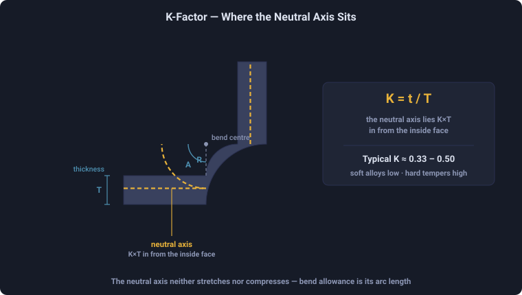
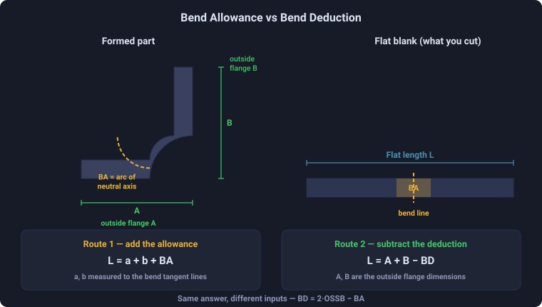
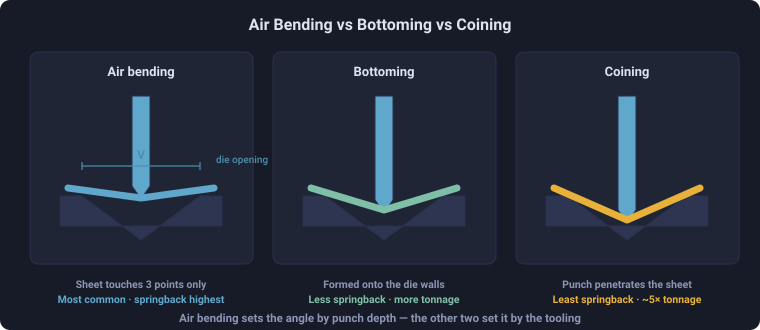
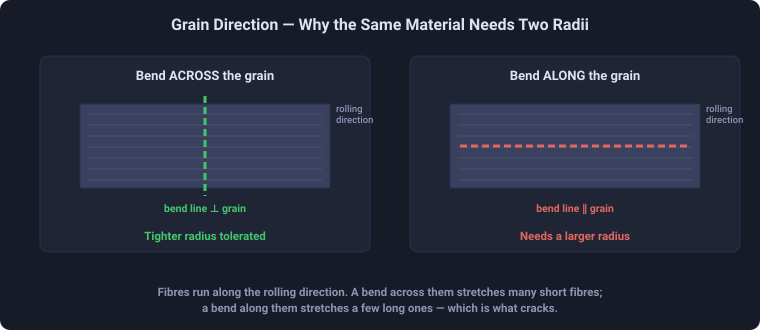

Sheet Metal Bend Radius & Bend Allowance Calculator
3D Model — Sheet Metal Bend Radius & Bend Allowance Calculator
Free sheet metal bend radius & bend allowance calculator — K-factor, bend deduction, flat pattern length, springback and minimum bend radius by material.
Press-brake bench — K-factor, bend allowance & deduction, flat length, springback and air-bend tonnage
Display Controls
Σ Live equations — values substituted from current state
💡 What-if coach — press-brake & design insights
🧮 Step-by-step calculation
1 Overview
The Sheet Metal Bend Radius Calculator is laid out like a press-brake bench. The Simulate tab is the workspace: a cross-section drawing on the left, the unfolded flat pattern on the right, a control deck of sliders below, and a dashboard of result cards. It computes the K-factor and neutral-axis position, the bend allowance and bend deduction, the flat (blank) length, the springback after release, the minimum safe radius, the die-driven effective radius and minimum flange, and the approximate air-bend tonnage.
Four tabs share the tool: Simulate (the bench), Explore (concept cards by topic), Practice (work a random part and check yourself) and Quiz (five scored questions with a star rating). A Units selector switches the whole tool between millimetres and inches.
2 The Control Deck
Every parameter has a slider with a stepper — drag for speed, or click −/+ or type an exact number: Thickness T, Inside radius R, Bend angle, outside legs Leg A and Leg B, and the V-die opening. Pick the Material from the chip strip (or + Custom to enter your own properties), set the K-factor to Auto or Manual, and choose the Lay — Left flat / Right flat rest one flange on a datum plane while the other bends up, and Symmetric V opens the bend evenly. A Preset drop-down loads common shop setups. The bend angle also has a vertical slider on the drawing, and you can drag the drawing directly — the flat flange stays locked on the datum while the free flange swings.
3 Reading the Dashboard
The dashboard cards update live: K-factor, R/T ratio, neutral-axis offset t, bend allowance, outside setback, bend deduction, flat length, springback radius and final angle, minimum bend radius, die-driven effective radius (≈16% of the V-die opening), minimum formable flange (≈½ die + thickness), and air-bend force. The status chip on the flat-pattern panel turns red if your inside radius is below the material minimum, and the flat pattern flags a flange shorter than the minimum. Open the Step-by-step calculation panel, or the Show Calculations button, for the full derivation in classical math notation.
4 Explore Mode
Explore organises the theory into topic tabs — Basics (neutral axis, K-factor, bend terms), Formulas (bend allowance, setback, deduction, flat length, each with a worked numeric example), Springback & Force, Materials (minimum radius, grain direction) and Best Practice (air vs bottom bending, die selection). Use it alongside Simulate to connect the numbers to the physics.
5 Practice & Quiz
Practice shows a random part and asks for its bend allowance, bend deduction and flat length, plus a safe / crack-risk judgement; press Check to score and reveal the worked solution. Quiz runs five questions combining a radius judgement with one numeric value, then shows your score with a one-to-three star rating and a per-question review. Switching units restarts the round in that system.
6 Metric vs Imperial
The Units selector converts the entire tool between millimetres and inches. All calculations are carried internally in SI and converted only for display, so results stay consistent when you switch. In imperial mode the length sliders, steppers and cards read in inches and the air-bend force is shown in US tons per foot; in metric they read in millimetres and kilonewtons per metre. The K-factor, R/T ratio and bend angle are dimensionless and read the same in both systems.
7 Drawing layers, exports & tips
Checkboxes under the cross-section toggle drawing layers: Dimensions, Neutral axis, the KaTeX Equation overlay, 45° Hatch, the Springback ghost and a debug Grid. The right panel switches between the Flat Pattern and a Springback gauge. The PNG button exports the drawing with a watermark; CSV exports every result. Right-click a canvas to copy results, export, or reset.
- Bend allowance grows with radius, thickness and K-factor — a sharper radius uses less material.
- Keep the inside radius at or above the material minimum; brittle tempers and bends along the grain need a larger radius.
- Higher-strength alloys spring back more — overbend to hit the target angle.
- For air bending an 8×T die opening is a sensible start; a wider die lowers tonnage but enlarges the radius.
Sheet Metal Bend Radius & Bend Allowance Calculator — Flat Pattern, K-Factor & Springback
A sheet metal bend radius calculator turns the geometry of a press-brake bend into the numbers a fabricator needs to cut and form a part correctly: the K-factor, the bend allowance (BA), the bend deduction (BD), the outside setback, the flat (blank) length for the flat-pattern development, the elastic springback, the minimum bend radius, and the air-bend tonnage. This free online tool computes all of them live, in metric (mm) or imperial (inch) units, with the full derivation shown in classical math notation.
Bend allowance and bend deduction are the heart of flat-pattern development — the process of unfolding a 3D sheet-metal part into the 2D blank you laser-cut, punch or shear before bending. Get the developed length wrong by even a millimetre per bend and a multi-bend bracket will not hit its dimensions. This simulator is built for sheet-metal fabrication students, apprentice CNC press-brake operators, mechanical and manufacturing engineers, and CAD users who want to verify the K-factor and bend-deduction values their software is using.
How Does Sheet Metal Bending Work?
When a flat sheet is bent over a punch and V-die, the outer surface stretches (tension) and the inner surface compresses. Between them lies the neutral axis — the fibre whose length does not change. Because the compressed inner fibres resist more than the stretched outer fibres, the neutral axis shifts toward the inside of the bend. The amount of flat material the bend consumes equals the arc length of this neutral axis, which is exactly what the bend allowance measures.
What Is the K-Factor?
The K-factor is the position of the neutral axis as a fraction of the material thickness: K = t / T, where t is the distance from the inside surface to the neutral axis and T is the sheet thickness. Because the neutral axis always sits inside the mid-thickness, K is always less than 0.5 — typically 0.33 to 0.45. A common rule of thumb is K ≈ 0.33 when the inside radius R is less than the thickness, 0.40 for R between 1–3T, and up to 0.50 for large radii. A measured K-factor from a test bend always beats a table value, which is why CAD systems let you tune it per material and thickness.

Bend Allowance vs Bend Deduction
These two values describe the same bend geometry from opposite directions, and beginners constantly confuse them. Bend allowance is added to the flange lengths measured to the bend apex; bend deduction is subtracted from the sum of the outside flange dimensions. Use whichever matches how your drawing is dimensioned:
- Bend allowance (BA) = the arc length of the neutral axis. Flat length = Σ(flange lengths to apex) + Σ(BA).
- Bend deduction (BD) = 2 × outside setback − BA. Flat length = Σ(outside dimensions) − Σ(BD).
- Outside setback (OSSB) = tan(A/2) × (R + T), the distance from the bend tangent line to the apex.

How to Calculate Flat (Blank) Length — Step by Step
For a single 90° bend with two outside flanges (Leg A and Leg B):
- Find the bend allowance:
BA = (π/180) × A × (R + K·T). - Find the outside setback:
OSSB = tan(A/2) × (R + T). - Find the bend deduction:
BD = 2·OSSB − BA. - Developed (flat) length:
L = Leg A + Leg B − BD.
Worked example — T = 2 mm, R = 3 mm, A = 90°, K = 0.44, legs 30 mm: BA = 6.09 mm, OSSB = 5.00 mm, BD = 3.91 mm, so the flat length is 60 − 3.91 = 56.09 mm. For multi-bend parts, subtract one bend deduction per bend.
Air Bending vs Bottoming vs Coining
The forming method sets both the achievable radius and the springback:
- Air bending — the punch presses the sheet partway into the V-die without touching the bottom. The inside radius is set by the die opening (≈16% of the V-width), not the punch. Lowest tonnage and most flexible, but the most springback.
- Bottoming — the sheet is pressed to the bottom of the die, forcing the radius to the punch radius for tighter tolerance and less springback (3–5× the air-bend force).
- Coining — very high tonnage embeds the punch into the metal, nearly eliminating springback for precision parts.

Minimum Bend Radius and Material Ductility — the UTM Connection
The minimum bend radius is the tightest inside radius you can form before the outer fibre cracks, expressed as a multiple of thickness (e.g. 0.5T or 1T). It is governed directly by the material's ductility — its percentage elongation and percentage reduction of area — the same properties measured on a Universal Testing Machine (UTM) in a tensile test. A material with high elongation (annealed copper, soft aluminium) tolerates a sharp radius; a low-elongation temper (6061-T6, hardened steel) needs a larger one. Fabricators confirm bendability with a guided bend test (ASTM E290, ISO 7438), the bending counterpart to the UTM tensile test. In short: the tensile elongation a UTM reports is what sets the minimum bend radius this calculator flags.

Springback, Overbending and Press-Brake Tonnage
Springback is the elastic recovery that opens the angle and enlarges the radius after the punch lifts. It grows with yield strength and R/T ratio and shrinks with a stiffer (higher-modulus) material, following Kalpakjian's relation Ri/Rf = 4(Ri·Y/E·T)³ − 3(Ri·Y/E·T) + 1. Fabricators compensate by overbending — bending a few degrees past target so the part relaxes to the right angle. Air-bend tonnage follows F = (k·UTS·L·T²)/W, where L is the bend length and W the V-die opening; a wider die lowers force but produces a larger natural radius and demands a longer minimum flange.
Common Sheet Metal Bending Mistakes
- Wrong K-factor for the process. Using a single K for every radius and thickness skews the flat length. K rises with the R/T ratio — tune it, or measure a test bend.
- Ignoring springback. Bending exactly to the target angle leaves the part open; high-strength alloys may spring back several degrees. Overbend to compensate.
- Radius below the minimum. A radius tighter than the material's minimum cracks the outer fibre, especially across a sharp temper or along the rolling direction.
- Flange shorter than the minimum. A flange shorter than roughly half the die opening plus one thickness slips into the V-die and forms badly.
- Bending along the grain. Bends parallel to the rolling direction crack more easily than bends across the grain — orient the bend line accordingly.
Standards Worth Citing
- ASTM E290 — Standard Test Methods for Bend Testing of Material for Ductility.
- ISO 7438 — Metallic materials — Bend test.
- DIN 6935 — Cold bending of flat rolled steel (bend-allowance / k-factor reference).
- ISO 2768 — general tolerances for fabricated sheet-metal parts.
K-Factor & Minimum Bend Radius by Material
| Material | K-factor (typical) | Min. bend radius (×T) | Notes |
|---|---|---|---|
| Mild steel (low carbon) | 0.44 | 0.5–2.0 | Most common press-brake material |
| Stainless steel 304 | 0.45 | 1.5–3.0 | High springback; overbend |
| Aluminium 5052-H32 | 0.40 | 0.5–2.0 | Good formability |
| Aluminium 6061-T6 | 0.41 | 1.0–3.0 | Hard temper; larger radius |
| Copper C110 (annealed) | 0.38 | 0.5 | Very ductile |
| Brass C260 | 0.41 | 0.5 | Forms easily |
| 4130 chromoly | 0.44 | 1.5 | Normalised; aerospace |
| Titanium Grade 2 | 0.42 | 1.5 | High springback |
| Galvanized steel (G90) | 0.44 | 1.0 | Watch coating cracking |
Minimum Bend Radius by Material and Thickness
Minimum inside bend radius is not a single number per material — it grows with thickness, because the outer fibre has to stretch further over the same arc. Values are expressed as a multiple of sheet thickness T.
| Material | 0.5–1 mm | 1–3 mm | 3–6 mm | 6–12 mm |
|---|---|---|---|---|
| Mild steel (cold rolled) | 0.5 T | 1.0 T | 1.0–1.5 T | 1.5–2.0 T |
| Stainless steel 304 / 316 | 1.5 T | 2.0 T | 2.0–2.5 T | 3.0 T |
| Aluminium 5052-H32 | 0.5–1.0 T | 1.0 T | 1.0–1.5 T | 1.5–2.0 T |
| Aluminium 6061-T6 | 1.0 T | 1.0–1.5 T | 1.5–2.0 T | 2.0–3.0 T |
| Copper (soft / annealed) | 0.5 T | 0.5–1.0 T | 1.0 T | 1.0–1.5 T |
| Brass (soft) | 0.5–1.0 T | 1.0 T | 1.0–1.5 T | 1.5–2.0 T |
Grain direction changes this. The figures above assume bending across (perpendicular to) the rolling grain. Bending along the grain stretches fewer, longer fibres and cracks more readily — add roughly 0.5 T, and more for hard tempers such as 6061-T6.
Treat these as starting points, not specifications. Published minimum radii vary between suppliers and standards, and the ranges above reflect that spread rather than hiding it. The real limit depends on the specific alloy and temper, grain direction, punch radius, die opening and edge condition — a sheared or notched edge cracks long before a clean one. Confirm against your material supplier’s data before committing to tooling.
Sheet Metal Bending Formulas
| Quantity | Formula | Description |
|---|---|---|
| K-factor | K = t / T | Neutral-axis offset ÷ thickness |
| Bend allowance | BA = (π/180)·A·(R + K·T) | Arc length of the neutral axis |
| Outside setback | OSSB = tan(A/2)·(R + T) | Tangent line to bend apex |
| Bend deduction | BD = 2·OSSB − BA | Subtract from outside dimensions |
| Flat length | L = Σ(legs) − Σ(BD) | Developed / blank length |
| Springback | Ri/Rf = 4x³ − 3x + 1, x = R·Y/(E·T) | Final vs formed radius |
| Air-bend force | F = k·UTS·L·T² / W | Tonnage per length of bend |
Who Uses This Simulator?
Sheet-metal and fabrication students, apprentice CNC press-brake operators, mechanical and manufacturing engineers, weldment and enclosure designers, and CAD users checking their flat-pattern and K-factor settings all use this tool. It is built for vocational and engineering education, turning abstract bend-allowance and bend-deduction charts into a live, visual calculation you can verify by hand.
Explore Related Simulators
Material ductility that sets the minimum bend radius is measured on the Universal Testing Machine (UTM) simulator. Dimensional accuracy continues with the Tolerance & Fits Calculator for ISO 286 and ASME B4.1 limits and fits, and the Thread Nomenclature tool for screw-thread geometry. For metal cutting and process planning see the Machining Calculator and the CNC G-Code Simulator, and for permanent fastening of fabricated plate the Rivet Joint Designer.